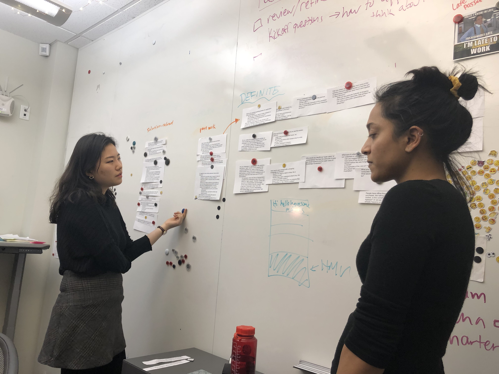

SPRINT 0From ainvayi stuff to awesome stuff
Set the expectations for the team and guidelines to foster a shared vision of team culture & begin understanding project space
By putting team goals, expectations, best practices and non-negotiables into a document, it forced the team to talk about all of these areas explicitly upfront. We were able to each raise our own ideas of what "done" deliverables look like, what communication methods are acceptable depending on the scenario and what our goals were for this team and this project. The team contract became the foundational cornerstone on which we launched our activities for the next several months, including our first critical client interaction.
Each team member came to our initial team meeting with individual ideas of goals and best practices, both for the team and for ourselves.
We outlined our ideas in turn and discussed where our ideas overlapped and where they diverged. Our overlaps became the basis for the goals and best practices we wrote down and the divergences were our guidelines to make sure we were specific enough in our contract. After we discussed goals & best practices, we moved onto more specific areas of team culture, including communication methods, roles and responsibilities. We used the best practices we had come up with to guide our documentation of roles and accountability in particular. For example, one of our team goals was to learn from each other and prioritize experiencing different areas of a project within our Capstone timeframe. Thus, when we were discussing roles, we developed a policy of checking in and encouraging role swapping every 2 sprints.
After building our foundational building blocks for team culture through discussion of goals, best practices and accountability, we put our words into action through our first team task: background research for our project. The entire space of online sensemaking was completely new to us, so we had a lot of ground to cover. We did several iterations of background research, starting with discovering anything and everything we could about online sensemaking, our clients, online shopping, machine learning and crowdsourcing - the key buzzwords of our project description. The space was nebulous and overwhelming, but by using communication and accountability standards we had established for our team, we were able to work together to build a shared understanding of the space.
The culmination of two weeks' worth of teamwork, diving deeply together in a space we knew little with a team dynamic we had just defined, was a 2.5 hour intensive client session - as our first face-to-face client interaction. This session, which we called our “kickoff meeting” was meant for us to present our team understanding of the project space to our client and discuss meaningful critical questions about the project with the client to shape our direction for the next 3 months. Pulling off such a session after only 2 weeks of the team working together and leaving the client with a sense of reassurance and excitement was no easy task. However, because we had established many working “norms” of our team culture upfront, we were able to present as a team and move ourselves forward.
To be or not to be. That's the question!
Dynamic equal opportunity unprecedented challenge to, effective program area youth venture philanthropy correlation. Society collaborative cities parse fairness co-create.